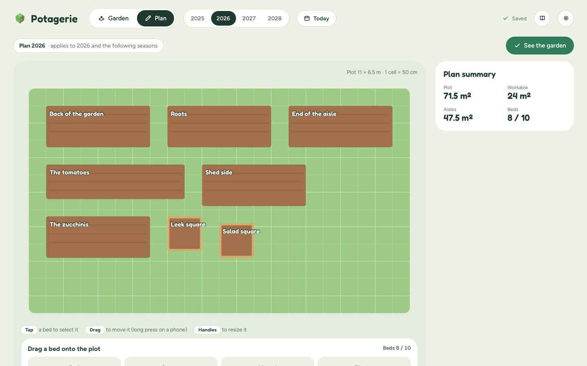

Plan your vegetable garden, then watch it grow
Draw your plot, plan what goes where and when, and play the season on a little isometric garden.
Free and open source. No account, no server: your garden stays on your computer.

Everything a small garden needs
Potagerie does the date arithmetic, so you can think about what to grow.
Draw your plot
Set the size of your land, then drag beds, squares, mounds and planters onto it. Aisles are kept for you.
A timeline of plantings
One row per bed. Sowing, growing and harvest are drawn as phases, and conflicts are refused before they happen.
67 crops
From tomatoes to garlic, with sowing windows, spacing and harvest times. Filter by family or by what is in season now.
Suggestions for free slots
A bed empty for a few weeks? Potagerie proposes the crops that fit the gap and fill it best.
Play the season
Move the cursor or press play: the plants of the garden grow, stage by stage, over the year.
Export and keep
Export the timeline as a PNG or a PDF to print, and the whole garden as a file to back up or move.
From an empty plot to a plan
- Create your plotIts size, the size of a cell and the minimum aisle width.
- Place your bedsClick free grass or drag a bed from the tray. Resize with the handles.
- Plant themPick a crop, a sowing date and the segments of the bed. The harvest dates follow.
- Follow the yearAnnotate frosts and chores, and come back to Today any time.

Get Potagerie
Installers for macOS (universal) and Windows are attached to each release. The app is not signed yet, so the system asks you to confirm the first launch.
Questions
Where is my data?
In a single file on your computer (potagerie.db). Nothing is sent anywhere. You can export your garden to a file and import it on another machine.
macOS says the developer cannot be identified
The app is not signed with an Apple Developer account. Open System Settings, Privacy & Security, and choose “Open Anyway”. If macOS says the app is damaged, run xattr -dr com.apple.quarantine /Applications/Potagerie.app.
Which languages?
English and French. The app follows the language of your system, and you can change it in the settings.
Is there a phone version?
Not yet: the first release targets the desktop. The interface is already built to adapt to a phone.
Which crops are included?
67 annual vegetables and herbs. Perennials such as asparagus or rhubarb are not in this version.